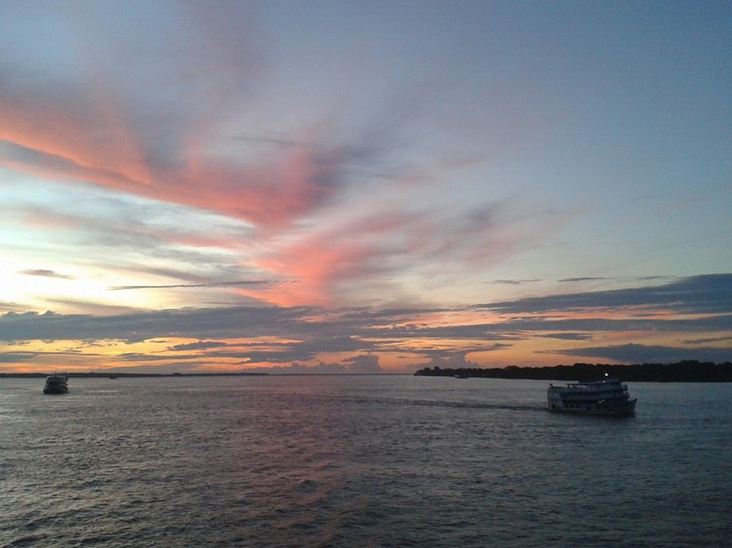

 Амазонка, Южная Америка
Амазо́нка (исп. и порт. Amazonas) — крупнейшая река на Земле по длине, площади бассейна и полноводности. Протекает по Южной Америке. Длина Амазонки является в научном сообществе дискуссионным вопросом и по различным измерениям составляет: от истока реки Мараньон — около 6400 км, от истока реки Апачет — 6992 км, от истока Укаяли — около 7100 км. Амазонка со своим длиннейшим истоком претендует, вместе с Нилом, на статус самого длинного водотока в мире.
Площадь бассейна с учётом притока Токантинс — 7 180 000 км²; это заметно превышает другие крупнейшие бассейны рек (Уругвай и Парана вместе — 4140 тысяч км²; Конго — около 3700 тысяч км²).
Лена, Евразия
Ле́на — река в России, в Восточной Сибири, впадает в море Лаптевых Северного Ледовитого океана, образуя крупнейшую в Арктике дельту. Длина вместе с дельтой — 4400 км. В некоторых случаях указывается длина 4294 км без учёта Быковской протоки (106 км) в дельте Лены. Площадь бассейна — 2,49 млн км². Среднемноголетний сток равен 530,225 км³/год.
Протекает по территории Иркутской области и Якутии, некоторые из её притоков относятся к Забайкальскому, Красноярскому, Хабаровскому краям, Бурятии и Амурской области. Лена — самая крупная из российских рек, чей бассейн целиком лежит в пределах страны. Также это крупнейшая река в мире, полностью протекающая в районе вечной мерзлоты.
Юкон, Северная Америка